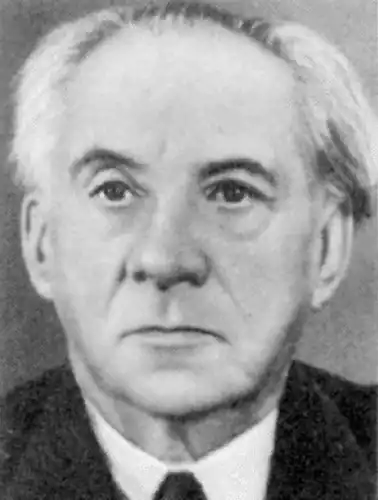
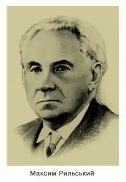
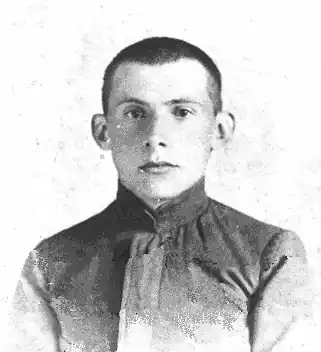
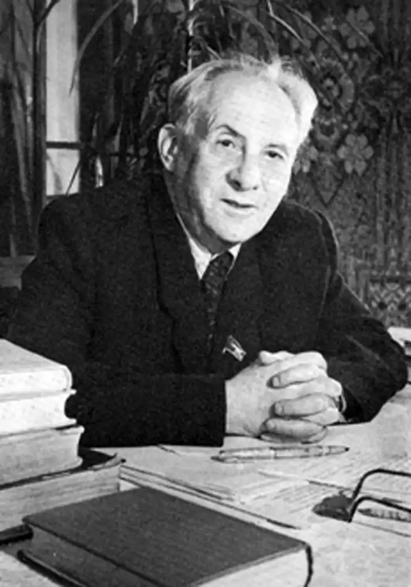
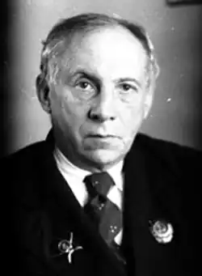
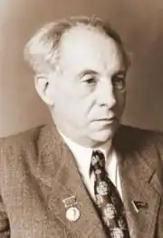
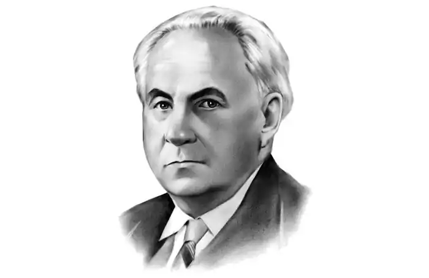

Максим Рильський
(19 березня 1895 — 24 липня 1964)
ЛІРИКА і ЛІРИЧНИЙ ЕПОС МАКСИМА РИЛЬСЬКОГО Парадокси долі й поезії Подвійний парадокс Максима Рильського. Здеклярований найбільший незалежник поезії — став одописцем спричинника геноциду України. Але вийшов чистим і цільним із цієї пригоди. Майстер традиційної форми, відограв ролю новатора в українській ліриці і в ліро-епіці. Одначе заплата за ці перемоги була все ж трагічна. Світова поезія втратила унікального поетичного перекладача. А Україна втратила нагоду дати свій варіянт великої європейської поеми, ліро-епічної поеми масштабу "Пана Тадеуша", "Розбійників", "Євгенія Онєгіна", "Чайльд-Гарольда". Бо тільки як лірик Рильський устиг дати основне до судної години антиукраїнського геноциду, що почався 1929 роком. Через таку долю поета особливості його біографії набирають першорядного значення. Максим Тадейович Рильський народився 1895 року. Його батько був сином багатого польського пана Розеслава Рильського і княжни Трубецької. Один із предків у 17 столітті був київським міським писарем. Молодий Тадей почув із уст свого діда і записав таке оповідання. Дід був учнем базиліянської школи під час взяття Умані гайдамаками 1768 року. Прив'язаний для розстрілу до стовпа, 14-літній хлопець почав співати "Пречиста Діво, мати руського краю..." Здивований гайдамацький отаман помилував не тільки малого шляхтича, а й усю групу засуджених на смерть поляків і євреїв. Тадей записав і опублікував це дідове оповідання в "Киевской Старине" з приміткою: "для уразумения современности и некоторого предвидения будущего". Згодом сталася "прекрасна авантюра", яка повернула круто життьовий шлях Тадея Рильського і його друзів. Голова київської громади польських студентів університету св. Володимира Тадей Рильський разом з Володимиром Антоновичем та групою інших польських студентів-аристократів відкрили собі і публічно заявили, що вони не поляки, а українці. І що їхній обов'язок перестати бути паразитами на тілі народу, вивчити досконало мову, культуру й історію України та віддати все своє життя нації, серед якої живуть. Польські шляхетські кола, що були панами Правобережної України, прокляли відступників, назвали їх хлопоманами. Поки поліція не звернула уваги на доноси, молоді неофіти України протягом кількалітніх вакацій пішки сходили всю Україну, щоб шляхом таких експедицій з першоджерела здобути знання про неї. Ще в останній рік життя Шевченка вони подали до журналу "Основа" свої писані кредо, заснували в Києві "Громаду", яка перебрала від Шевченка-Куліша-Костомарова провід новим українським відродженням. Потім деякі з них стали співтворцями журналу "Киевская Старина". Тадей Рильський, хоч мав будинок у Києві, постійно жив у селі Романівка, де одружився з простою селянською дівчиною, оставшись на все життя вірний ідеї "прекрасної авантюри своєї молодости". (Ф. Р. Рильський [Некролог]. "Киевская Старина", 1902, XI, стор. 335 — 348). Тадей навчив свою молоду дружину грамоти. Зате вона передала синові разом з молоком матері рідну мову, пісню, той особливий ліризм, що б'є з поезії Рильського чистим українським джерелом ("З любов'ю до народної творчости я, здається, і вродився", — пише Максим Рильський у нарисі "Із спогадів". Твори, т. І, 1960, стор. 67). Максим народився в Києві 19 березня 1895 року, але ріс у Романівці на Сквирщині. Тут він мав домашню школу українську, домашню загальну освіту й виховання під рукою батька, що передав синові аристократичну культурну спадщину, почуття власної незалежности і віри в себе, поєднане із скромністю. І хоч батько помер на восьмому році Максимового життя, він забезпечив синові і приватну гімназію в Києві з добрими вчителями, і знання чужих мов та культур, і життя в аристократичних родинах Миколи Лисенка та Олександра Русова. Київ і Романівка — два бігуни життьової і творчої вісі Рильського. Київ — перехрестя культур, центр клясичної освіти, одне з тих міст імперії, яке відвідували світові театри і музики. Романівка — незрівнянні інтер'єри української природи, пісні, легенди старовини і барвисті цільні душі, гідні пера Гоголя і Шекспіра. Так склалося, що Рильський ріс у домашній освіті, а потім самоосвіті і праці. Але до офіційної науки в школі не був ентузіяст: після приватної гімназії у Києві вступив на медичний факультет, потім на історико-філологічний, та ні того, ні другого не закінчив. В автобіографічній поемі "Мандрівка в молодість" Рильський признається: "Студентській лаві б слід тут скласти похвалу, але признаюся, що мало я тій лаві в житті завдячую". Домашня освіта з дитинства доповнилася потім самоосвітою. Він жив і вчився разом, то віддаючися розвагам безпечного рибалки й товариша великої кумпанії, то впиваючися працею над своїми і чужими творами. То розкошуючи з представниками своєрідної сільської мистецької богеми, як його друзі селяни Денис Каленюк — співець, рибалка-мисливець і донжуан, і Родіон Очкур — швець, музика-скрипаль, аматор чарчини і запашних оповідань. Від цих друзів, від братів і батька дістав Максим посвячення в розкішний світ гоголівської України. Молодий Рильський не знав гніту злиднів, і українське село правило йому за своєрідну Елладу. Він цінив цей світ свідомо з дитинства і охрестив його назвою своєї першої, майже в дитячі роки написаної збірки поезій "На білих островах". Любов — краса — воля Рильському було тоді 15 років. Головне, чого він навчився за ці перші півтора десятка років життя, — любити: любити природу, людей, красу, мистецтво, легенди і дійсність. Шістнадцятирічним юнаком він пише: Люби природу не як символ душі своєї, Люби природу не для себе, Люби для неї. . . . . . . . . . . . . . . . . . Вона — це мати. Будь же сином, А не естетом, І станеш ти не папіряним — Живим поетом! (Твори, т. І, стор. 146) І так увійшов він у світ ліричної творчости життєлюбом, закоханим у всі прояви життя, з його головними скарбами любови, краси і волі. У нього мимохіть синтезується грецьке поняття краси як гармонії з барокковим поняттям краси як сили, що творить і єднає найкрайніші протилежності. Краса не в лініях, не в тоні, не в поставі: Це повів, риска це, це промінь здалеки, Що раптом промайне і спалахне в уяві, Нараз освітливши події та віки... Спробувавши десятки визначень краси, поет капітулює: Краса! Збагнуть її — це сонце погасить! Схилімо ж голови, стулім уста суворо, І наймудріший там хай никне і мовчить, Де подив, як огонь, розкрилюється вгору, Де крізь метелицю одна-єдина мить Горить розкритому, засліпленому зору, Де ранить блискавка серця своїм мечем, Де сльози радости мішаються з плачем! ("Сіно", Твори, т. IV, стор. 38-39) І, звичайно, краса, як така, як незалежна першовартість життя, є постійним мотивом ліричної і ліро-епічної творчости Рильського. Із своєї щасливої незахмареної юности Рильський виніс ще один скарб — це почуття волі як найвищого скарбу людини. Волі, що органічно поєднується у нього із творчістю. В одному сонеті він пише, що всю славу, і багатства, і книги, і навіть кохання ніжну кормигу — все він віддав з низьким поклоном Долі: За день один в широкім чистім полі Я взяв собі у неї замість них Веселий сміх, безмежне щастя волі І ріг — мисливський переливний ріг. Так на вісі Київ — Романівка виріс великий незалежний поет любови, краси і волі — із цим вантажем урізався його життьовий корабель у льодові поля комуністичного крижаного океану. На нього зразу ж накинулися партійні газети за аполітизм, гедоністичне естетство, декадентство, відірваність від сучасности і соціялістичної революції. Він одбивався як міг: статтями і віршами. "Я можу одгукуватись ліричним віршем тільки на минуле, на те, що осталось у душі і може мати прозору форму, питому моїй манірі. Інакше писати не можу" ("Моя апологія альбо самооборона". "Більшовик", Київ, ч. 216, 25 вересня 1923). Під кінець двадцятих років, коли вже завис над відродженням ніж гільйотини, Рильський ще захищався далі: Той клясицизмом очі коле, А той рибальством допіка, Той тінь Плеханова — о доле! — З могили марно виклика, І всі знайшли, а я шукаю. — І як їм знати, скільки мук Таїть у радості й одчаї Із серця вихоплений звук. Вражає відвага і впертість Рильського, який захищав незалежність поета, аж доки його не арештували (1931), кинувши приблизно на рік у Лук'янівську тюрму в Києві. Цей арешт означав не поразку, а перемогу поета. За яких 8 — 10 років в умовах терору ЧК-ГПУ-НКВД, під постійним обстрілом і погрозами з боку окупанта поет устиг створити десять книжок першорядних ліричних і ліро-епічних творів та кілька книжок поетичних перекладів, серед яких досить згадати переклади "Пана Тадеуша" та французьких клясиків 17 ст. і французьких парнасців і модерністів. Він здобув перемоги як лірик і поетичний перекладач. Як ліро-епік він тільки приготувався до перемог. Рильський видрукував за свого життя 35 книжок поезії, з чого 31 книжка лірики і чотири книжки ліро-епічних поем. Сюди не входять повні перевидання. Крім того, він переклав з 13 мов понад чверть мільйона рядків поезії; автор кількох книжок статей, редактор незчисленної кількости різних поетичних та етнографічних видань. Оглядаючись на ці гори виконаної роботи, можна дивуватися, коли ж він мав час бути ще й безжурною птицею, мисливцем, богем'ярем-другом? Хто багато працює — той має час... Секрет того чуда також у тому, що він мав талант до праці, споряджений таким першорядним мотором, як любов. Він любив свою творчу працю так само, як любив жінку, природу, мисливство, життя, — любив для них — не для себе. Ізнов "Тадеуша" я розгорнув, Розклав папір, вікно завісив синє, Знов шляхта гомонить передо мною, Драпується у романтичність Граф, Знов ріг мисливський грає над борами І кида в небо тріюмфальний клич. Знов я дивую майстрові, що вмів Такою певною вести рукою Свавольне панство. Поряд із цією прикметою любови до творчої праці він посідає те, чого до нього було так мало в нашій літературі: досконале знання, уміння творити, підкреслюю — знання. Інакше сказати — майстерність. А при тому він був перфекціоніст у праці: наприклад, свого конгеніяльного з першого ж видання (1927) "Тадеуша" доробляв майже до смерти. Але вернімось до списку творів.